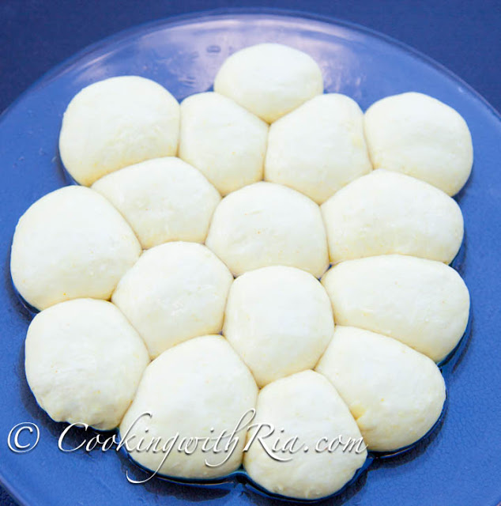
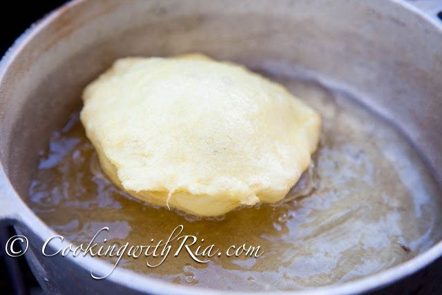
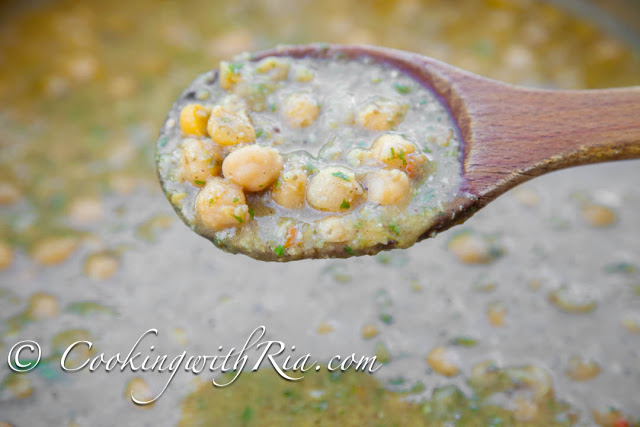
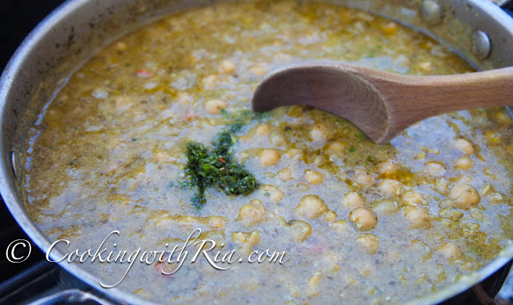

How to Make Trinidad Doubles (Cooking with Ria)

Trindad Doubles
One of the most famous Trinidad street foods, Doubles, is commonly associated with breakfast or late-night bar crawls.
Made with cooked chickpeas (chana) placed on top of two fried flatbread (two bara) and finished with various local
condiments such as cucumber chutney, tamarind chutney, chadon beni sauce, and pepper sauce.
Prep Time: 10 mins Cook Time: 1 hr 30 mins
Ingredients
Doubles Bara:
- 2 cups all purpose flour
- 1/2 tsp baking powder
- 1 tsp salt
- 1 tsp instant yeast
- Pinch of turmeric, 1/4 tsp
- 2 tsp sugar
- 1 cup lukewarm water MINUS 3 Tbs
- 1 Tbs vegetable oil for rubbing on dough
- 2 cups vegetable oil for frying
Doubles Channa:
- 1/2 lb dried chickpeas channa
- 1 tsp baking soda divided
- 1 tbs minced culantro bandhania
- 1 Tbs garlic, minced (3 cloves)
- 1/8 tsp turmeric or up to 1 tsp depending on the brand
- 1/2 tsp amchar massala or ground roasted cumin, or a combo
- 1 to 2 tsp himalayan salt to taste
Cucumber Chutney:
- 1 cucumber, grated
- 1 tsp garlic, minced
- hot pepper, minced, to taste
- 1 tsp bandhania, minced
- salt to taste
Bandhania Chutney:
- 1 bunch bandhania (shado beni or culantro)
- 2 cloves garlic
- hot pepper to taste
- salt to taste
Instructions:
Bara Instructions
- In a medium bowl, add flour, baking powder, salt, yeast, turmeric and sugar.
- Add lukewarm water gradually and mix to form a very soft, slightly sticky dough. Do not over knead.
- Rub the dough with oil, cover and set aside to rest, 1 hour minimum, or until doubled, 6 hours or overnight.
The longer it rests, the softer the bara--6 hours is perfect, but 1 hour is okay.
- Divide the dough into 16 balls. Cover and allow it to raise another hour or until doubled.

- Rub oil on a flat surface or plate. Place the dough on the oiled surface and flatten to a 6" round (oil
hands as well) or almost transparent. Make to your desired thickness and width, keeping in mind it puffs
up as it cooks
- Meanwhile heat oil in a small pot over medium-high heat. When the oil is very hot, gently place dough in hot
oil and fry on each side until cooked and golden brown (takes seconds if the oil is hot enough. Drain on
the side of the pot, using the spoon.

- Place the fried dough (bara) in paper towel or clean kitchen towel, stacking them on each other as they are
done frying. This will allow them to flatten, steam and give them the soft, chewy texture we all love.
Repeat with the remaining dough. Serve hot with Doubles channa below.
Channa Instructions
- Soak chickpeas overnight with 1/2 tsp baking soda. Drain and rinse with several changes of water. Drain
again.
- In a pot, add about 6 cups of water and place over medium heat. Add channa, 1 tsp of salt, 1/2 tsp baking
soda and stir to combine> bring to a boil and scoop out any impurities that rise to the top. Adding more
baking soda than this will give it a weird metallic baking powder taste.
- When chickpeas are tender, about 1 hour, add minced bandhania, minced garlic and turmeric and mix well. You
can also add minced hot pepper.
- Continue to cook for 15-20 mins or longer if required. During this time, with a wooden spoon, stir, moving
back and forth motion to bring it to the right consistency. This will take several minutes for the channa
to thicken, so be patient. Doubles will be ready soon!

- Taste for salt and add more if required. To finish, mix in bandhania, amchar massala or ground roasted cumin
or a combination.
Enjoy with the baras! Can be made ahead, a day before. Can be easily doubled.

Chutney
- To make the cucumber chutney, mix all ingredients to combine. Taste and add salt and black pepper if required.
- To make the bandhania chutney, place all ingredients in a blender or food processor and pulse to combine. Add
salt to your preference. You will need to add water if making it in a blender, just enough to combine.
Tips & Notes:
This recipe makes enough for about 8 doubles depending on the size of the baras made which can be thick or thin
based on preference.
Nutrition Facts:
Sodium: 388 mg Calcium: 43 mg Vitamin C: 1 mg Vitamin A: 17 IU Sugar: 4 g Fiber: 6 g Potassium: 291 mg
Calories: 259 kcal Saturated Fat: 5 g Fat: 8 g Carbohydrates 39 g Iron: 3 mg